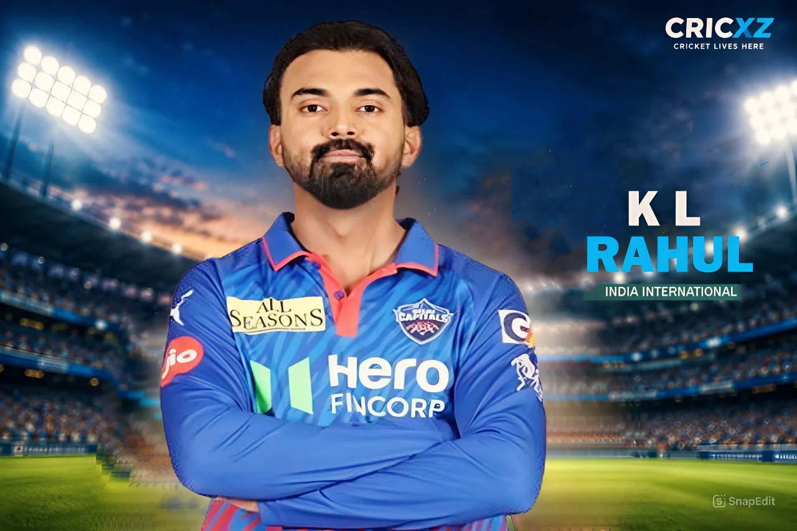

ODI (Updated)
- Matches
- 101
- Runs
- 3,541
- Highest score
- 129*
- Batting average
- 50.60
- Strike rate
- 91.50
- Hundreds
- 9
- Fifties
- 20

With over 15,000 international and franchise runs across all formats, KL Rahul is celebrated for his flawless technique, versatility in the batting order, and reliability behind the stumps.
In today's thrilling ODI encounter, KL Rahul played a masterclass innings, scoring a breathtaking 129 runs off just 87 balls. Showcasing his trademark elegant drives and calculated aggression, he anchored the innings perfectly and guided Team India to a massive total. This century further cements his legacy as one of India's most dependable middle-order batters in the 50-over format.
Statistics updated: 3 October 2026 (Includes recent 129-run ODI knock)
Primary career statistics source: Official ICC Rankings & Records.
KL Rahul has built one of the most versatile batting careers in Indian cricket history. Arriving on the international scene in 2014, he set the record for being the fastest batter to score centuries in all three formats in just 20 innings. What separates Rahul from many of his contemporaries is the sheer breadth of his record.
His Test career yields over 4,200 runs, featuring an iconic high score of 199 against England. However, it is in 50-over cricket where Rahul’s numbers are arguably the most impressive. Averaging over 50 in ODIs across 100+ matches is a benchmark achieved by very few. Whether opening the batting or stabilizing the middle order as a wicketkeeper, he consistently converts his starts into match-winning hundreds.
In the IPL, he has been a consistent run-machine, amassing over 5,800 runs while leading franchises like Punjab Kings and Lucknow Super Giants.
26 December 2014
Against Australia at Melbourne Cricket Ground (MCG).
11 June 2016
Against Zimbabwe at Harare Sports Club (Scored an unbeaten 100 on debut).
11 April 2013
For Royal Challengers Bangalore vs Kolkata Knight Riders.
Became the first Indian batter to score a century on his One Day International debut (100* vs Zimbabwe in 2016).
Set the record for the fastest player to score centuries across all three international formats (Test, ODI, T20I) in just 20 innings.
Scored a magnificent 129 against England at Lord's in 2021, cementing his name on the historic Honours Board.
Holds the record for the highest individual score by an Indian in the IPL (132* off 69 balls against RCB in 2020).